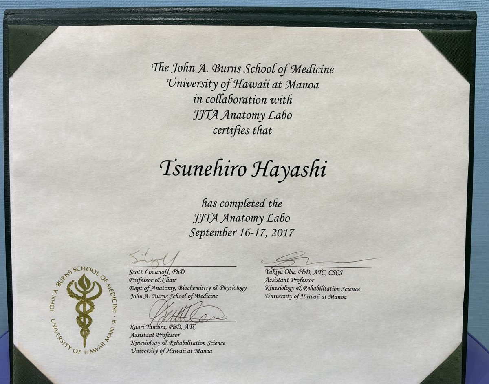
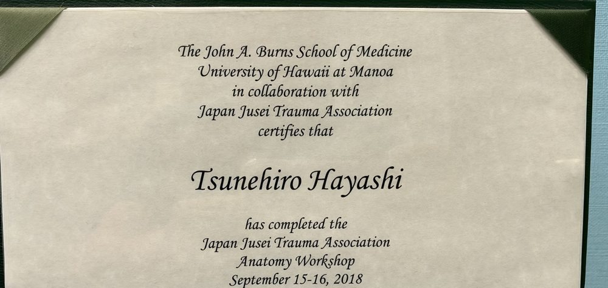

カラダの使い方
ハワイ大学の解剖実習で学んだこと。骨格から整える理由

- 2017年と2018年にハワイ大学医学部で解剖学の研修を受けました
- カラダの中は教科書の図とは違い人によっても大きく違います
- その経験が骨ぴか整体や鍼の施術の土台になっています
総括院長の林です。私は2017年と2018年の2回、ハワイ大学医学部で行われた解剖学の研修に参加しました。実際の人のカラダで学ばせていただく研修です。
学ばせていただいた方への感謝と敬意を忘れずに、今も毎日の施術に向き合っています。今日は、そこで学んだことをお話しします。
教科書の図と実際のカラダは違いました
学校で使う教科書の図は平面です。ところが実際に見ると、筋肉や神経などの組織の大きさや位置は、教科書で覚えていたものとは違っていました。
厚みや重なり、奥行きは、実際に見てはじめて分かることでした。
人によって大きく違うこと
もうひとつ驚いたのは、人によって組織の大きさがかなり違うことです。同じ名前の筋肉でも、大きさも形もひとりひとり違います。
「みんな同じカラダ」ではないことを、自分の目で確かめました。
いまの施術にどう活きているか
- 骨格矯正の精度が上がりました
骨ぴか整体が進化し続けるきっかけにもなっています。 - どこに施術をすればよいかが明確になりました
骨ぴか整体でも鍼でも、ねらう場所がはっきりします。 - 問診や検査がより確かになりました
皮膚の上から骨や筋肉の位置をとらえること（体表解剖）が、より明確になりました。
当院が「まず骨格を整える」ことを大切にしているのは、こうした学びがあるからです。
ひとりひとりのカラダに合わせて
カラダは人によって違います。だからこそ当院では、最初にお話をうかがい、姿勢や動きを確かめてから施術を決めています。
気になる症状があるときは、お気軽にご相談ください。
